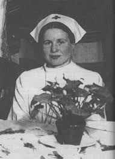
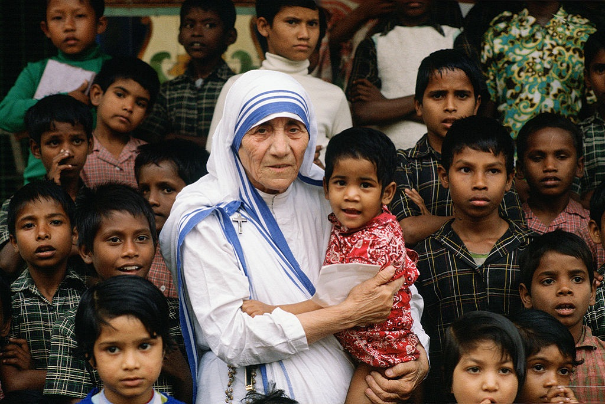

Erkölcsi minőség, humanitás (legfontosabb jelentés)
A köznyelvben és a morális értelemben az „emberség” szó elsősorban egy pozitív erkölcsi mércét jelöl.
Olyan eszményi emberi magatartást ír le, amelyben a jóság, az empátia, a segítőkészség, a méltóság és az igazságosság dominál.
Ez a jelentés áll a legközelebb Raoul Wallenberg tetteihez.
Az emberséges ember:
• Együttérző: Képes mások helyzetébe képzelni magát, és osztozni a fájdalmukban (empátia).
• Tisztelettudó: Elismeri mások méltóságát és jogait.
• Segítőkész: Kész cselekedni mások javára, akár személyes áldozat árán is.
• Igazságos: Kerüli a kegyetlenséget és a rosszindulatot.
Irena Sendler (Lengyel szociális munkás, 1910-2008)
Irena Sendler a második világháború alatt, a Varsói Gettóban dolgozott szociális munkásként. Az ellenállás tagjaként körülbelül 2500 zsidó gyermeket mentett meg a biztos haláltól:
Különböző csempészmódszerekkel (pl. mentőautók, szerszámosládák) vitte ki őket a gettóból.
Hamis papírokat adott nekik, a valódi neveiket pedig titokban, befőttesüvegekben ásta el, hogy a háború után azonosítani tudják őket.
A Gestapo letartóztatta és megkínozta, de megszökött, és folytatta a mentőakciót.
Az ő élete a rendkívüli bátorság és az emberi jóság példája a történelem legnehezebb idejében.
Teréz anya élete az emberség egyik legismertebb példája.
Kalkutta nyomornegyedeiben évtizedeken át gondozta a legszegényebbeket és a betegeket.
Ők gyakran olyan emberek voltak, akiknek senki más nem segített.
Nemcsak ételt és ellátást adott, hanem figyelmet, érintést és emberi méltóságot.
Tettei azt mutatják, hogy az emberség sokszor egyszerű, de őszinte törődésből fakad.
Ez azt jelenti, hogy észrevesszük a rászorulót, és nem hagyjuk magára.
Az emberség a 2. világháború idején azt jelentette, hogy az emberek a félelem, erőszak és pusztítás közepette is megőrizték emberi méltóságukat és mások iránti együttérzésüket.
Sokan segítettek üldözötteket rejtegetni, ételt és menedéket adtak a rászorulóknak.
Titokban támogatták a menekülőket, vagy ellenálltak az embertelen parancsoknak.
E bátor, kockázatos tetteik azt bizonyították, hogy az emberség még a legsötétebb időkben sem tűnik el.
Raoul Wallenberg neve az emberség fogalmával forrt össze.
Tettei révén a szó legnemesebb értelmében vált az emberiesség és a bátorság szimbólumává.
Kapcsolatuk több szempontból is magyarázható.
Életek mentése:
Wallenberg svéd diplomataként 1944 nyarán Budapestre érkezett azzal a céllal, hogy a magyar zsidóság deportálását megakadályozza.
Kockáztatva saját életét, több tízezer (egyes becslések szerint akár százezer) zsidó ember életét mentette meg a holokauszt idején.
Ez a cselekedet az emberség legmagasabb rendű megnyilvánulása.
Diplomáciai mentőakció:
„Védőútleveleket” (svéd védett dokumentumokat) állított ki, amelyek azt a látszatot keltették, mintha a birtokosaik svéd állampolgárok lennének.
Ezekkel mentette ki az embereket a gyűjtőtáborokból, a halálmenetekből és az Eichmann-féle deportálások karmaiból.